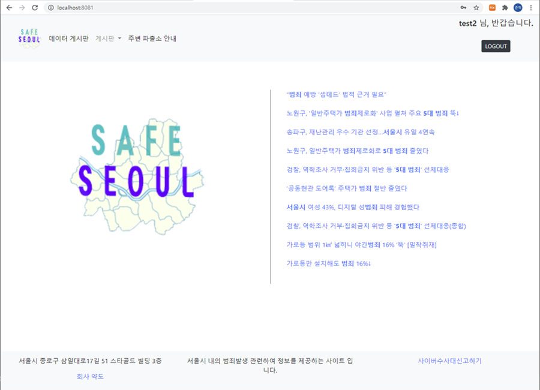
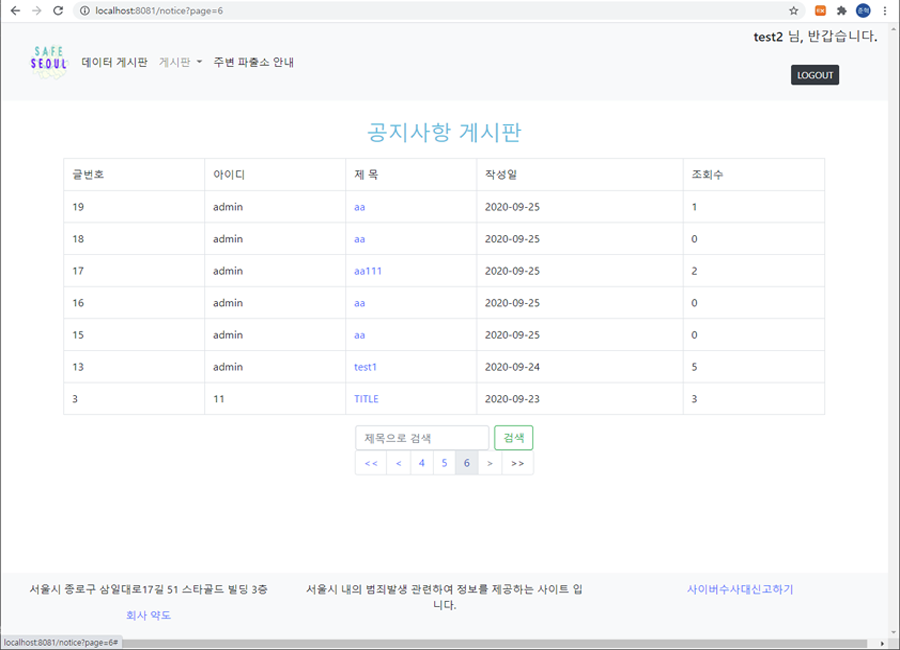
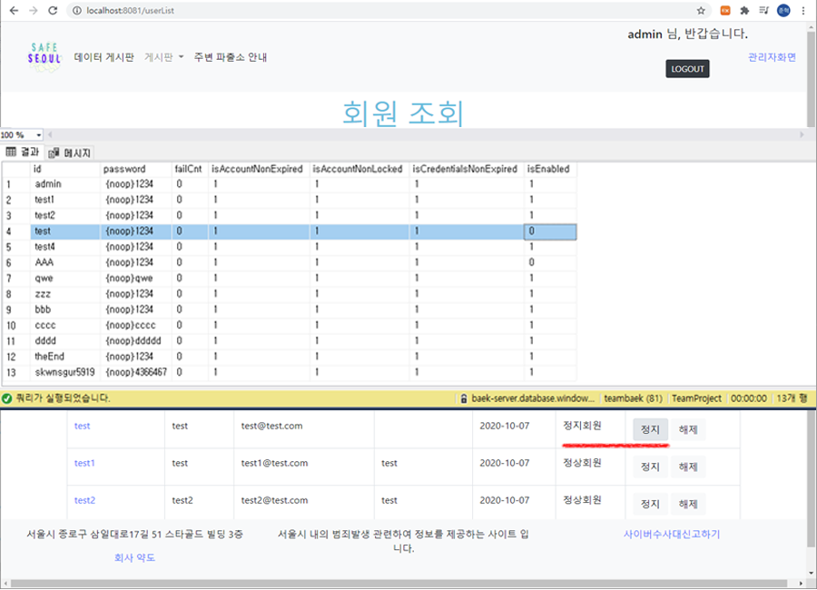
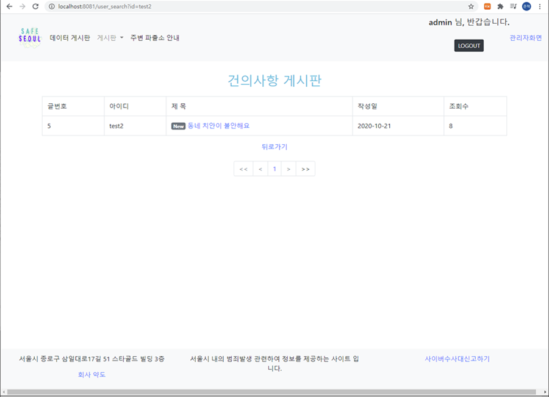

SAFE SEOUL
SpringBoot,AZURE,MS-SQL,SECURITY,MYBATIS,JAVA 이용하여 만든 웹사이트의 메인페이지입니다. 범죄 관련 크롤링한 자료 도출 및 시민의 정보보호를 위한 비공개 기능 민원 게시판입니다. 저는 SECURITY 를 이용한 가입 및 로그인 기능 및 화면 설계, 민원 게시판의 공개/비공개를 통한 글 작성 및 관리자 답변 등 유저 권한 관련 기능 전반적으로 작업하였습니다. 메인의 우측 게시글은 크롤링('범죄','서울시')을 통해 관련도 및 기간으로 분류하여 url을 연동하였습니다.
custom login 화면입니다. Spring Security를 이용해 권한('ROLE_USER','ROLE_ADMIN')을 부여하고 로그인 오류에 대해 체크할 수 있도록 설계 하였습니다.
에러 발생 시 커스텀 된 에러 메시지가 출력되고, 비밀번호 입력 오류 시에는 오류횟수를 카운트하여 5회 이상 에러시 정지 처리가 됩니다.
로그인 성공 후. 메인페이지를 default page로 설정하여 이동된 모습입니다. 로그인 성공 시 토큰값을 저장하여 페이지 이동 시에도 유저데이터를 가져올 수 있습니다.
USER DB 로 사용된 테이블. AUTHORITY,USER_INFO, USER_LIST 3개의 테이블로 이루어져 있고, 보안을 위해 암호는 회원가입시 자동 암호화가 되어 저장되도록 설계 하였습니다.
google map application 을 이용하여 접속지역 주변 '경찰서' 의 위치들을 표시해줍니다.

공지사항 게시판. 관리자만 작성 및 수정, 삭제가 가능한 페이지로 'ROLE_USER'는 상세내용, 제목검색만 가능합니다.
게시판의 기능 중 이 페이지는 공개/비공개를 통해 민원을 올릴 수 있는 게시판으로 제작되었습니다. 글 작성 시 공개여부를 선택하면, db의 help_open 칼럼이 0 또는 1 로 설정되어 비공개시 해당하는 유저 및 관리자만 내용을 볼 수 있습니다.

게시판의 기능 중 이 페이지는 공개/비공개를 통해 민원을 올릴 수 있는 게시판으로 제작되었습니다. 글 작성 시 공개여부를 선택하면, db의 help_open 칼럼이 0 또는 1 로 설정되어 비공개시 해당하는 유저 및 관리자만 내용을 볼 수 있습니다. 마지막 사진은 다른 유저 로그인 시 보이는 화면입니다.
본인 작성 글은 오직 본인만 수정 및 삭제가 가능하도록 구현했습니다.
관리자 모드. 로그인 후 민원페이지에서 공개/비공개 상관없이 전체 공개상태로 열람 가능하며, 클릭 시 답글을 달 수 있습니다.
게시판에 사용된 테이블 db. 각각 건의게시판/ 공지게시판
관리자 페이지입니다. 유저 정지 처리 및 정상 처리가 가능합니다.
유저 아이디 클릭 시 해당 유저가 작성한 민원 글들을 조회 할 수 있습니다.